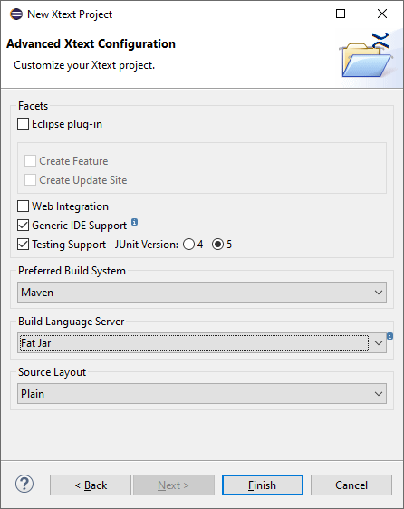
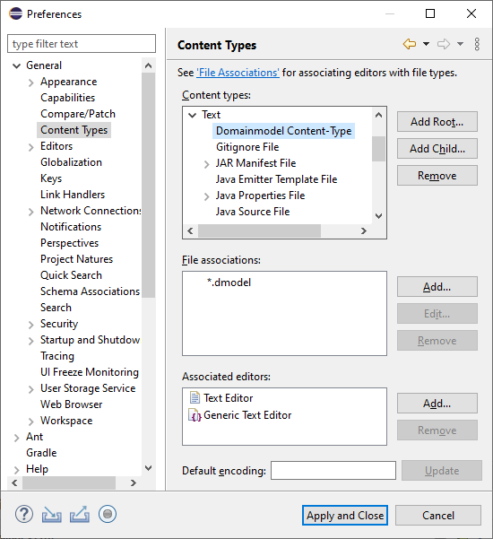
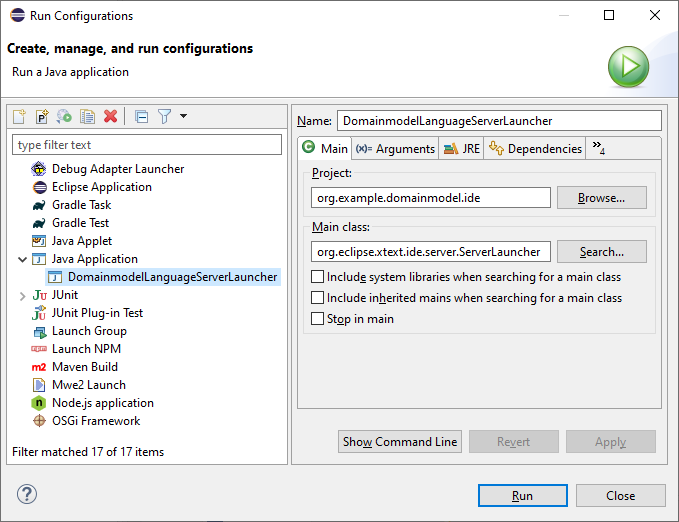
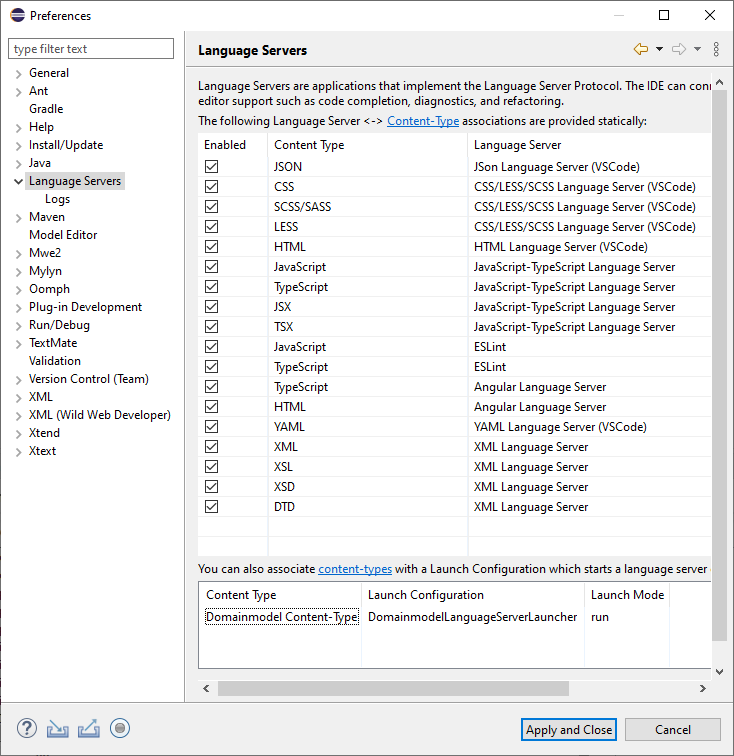
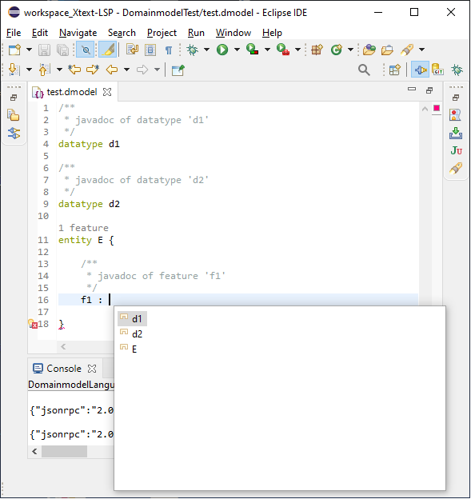

LSP Support
Xtext supports the generation of language servers that comply to the Language Server Protocol (LSP).
Getting Started
Step 1: Create a new Xtext Project with language server support.

Step 2: Implement the Domainmodel language following the Xtext - 15 Minutes Tutorial.
Step 3: Try out the Domainmodel language server in Eclipse based on LSP4E.
-
Configure a content type to the
*.dmodelfiles:
 -
Create a launch configuration that starts the Domainmodel language server:
 -
Assign the Domainmodel content type to the Domainmodel language server launcher:
 - LSP does not support syntax highlighting (usually it is done on the client side). The following TextMate json file adds syntax highlighting support for the keywords, single-line and multi-line comments of the Domainmodel language:
{ "name": "Domainmodel", "scopeName": "text.dmodel", "fileTypes": [ "dmodel" ], "repository": { "general": { "patterns": [ { "include": "#linecomment" }, { "include": "#blockcomment" }, { "include": "#keyword" } ] }, "linecomment": { "name": "comment.line.double-dash.dmodel", "begin": "(^[ \\t]+)?(?=//)", "end": "(?=$)" }, "blockcomment": { "name": "comment.block.dmodel", "begin": "/\\*(\\*)?(?!/)", "end": "\\*/" }, "keyword": { "name": "keyword.control.mydsl", "match": "\\b(entity|datatype)\\b|!" } }, "patterns": [ { "include": "#general" } ], "uuid": "8383e49a-fa0d-4bb5-827b-10e8abb294ca" } - Open a
*.dmodelfile with the Generic Editor and explore the supported language features like syntax highlighting, content assist, validation, displaying code lenses, quickfixes, formatting, … :

Step 4: Feel free to implement further LSP clients to the Domainmodel language server based on Atom, Eclipse Che, Eclipse Theia, IntelliJ IDEA, Monaco Editor, VS Code, … The currenly supported LSP clients are available in the LSP clients section of https://langserver.org/.
Language Features
Currently, Xtext supports the following LSP language features:
| LSP 3.16.0 (released on 2020-12-14) LSP4J 0.10.0 (released on 2020-11-05) |
Xtext 2.24.0 (released on 2020-12-01) |
|---|---|
| Diagnostic (aka Validation) | |
| Completion (aka Content Assist) | |
| Snippets (aka Template Proposals) | |
| Hover | |
| Signature Help | |
| Goto Declaration (aka Hyperlinking) | |
| Goto Definition (aka Hyperlinking) | |
| Goto Type Defintion (aka Hyperlinking) | |
| Goto Implementation (aka Hyperlinking) | |
| Find References | |
| Document Highlight (aka Marking Occurrences) | |
| Document Symbols (aka Model Elements, Outline View) | |
| Code Action (aka QuickAssist, QuickFixes) | |
| Code Lens (aka Code Mining) | |
| Document Link (aka Hyperlinking) | |
| Document Color | |
| Document Formatting (aka Formatting) | |
| Document Range Formatting (aka Formatting) | |
| Document on Type Formatting (aka Auto Editing) | |
| Rename (aka Rename Refactoring) | |
| Folding Range (aka Folding) | |
| Selection Range (aka Double Click Text Selection) | |
| Call Hierarchy | |
| Semantic Tokens (aka Semantic Highlighting) | |
| Linked Editing Range (aka Rename Refactoring) |
Unit Testing
Automated tests are crucial for the maintainability and the quality of a software product. That is why it is strongly recommended to write unit tests for your language server, too. Xtext provides the org.eclipse.xtext.testing.AbstractLanguageServerTest base class that comes in handy when implementing automated LSP unit tests. The org.eclipse.xtext.ide.tests.server package contains JUnit test cases for almost all supported language features. Feel free to study them to get some inspirations on how to implement automated unit tests for your Xtext-based language server.